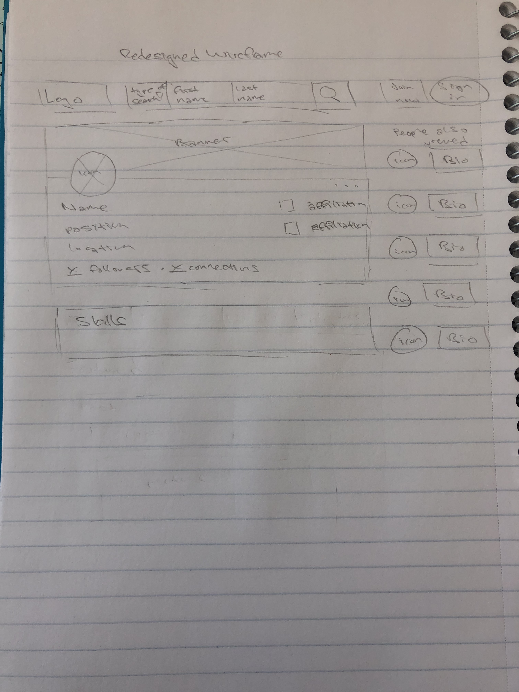

-
Using the favorite website you chose in homework 1, create a wireframe for one page of it using pen/paper, PowerPoint, or any your tool of choice. (use the 'img' tag!) Make sure to let us know what the name of your website is (Use the 'p' tag!)

-
Try to improve the website you've chosen, and create a redesigned wireframe of one page for the same website using the principles of visual hierarchy that you learned from the article.

-
What is the goal of the website? Who is it intended for? How does the design accomplish this? Write 2-3 sentences answering these questions. (Use the 'p' tag again!)
The goal of this website is to showcase people's goals and accomplishments for professional uses. The design accomplishes this by emphasizing the person's profil picture and basic background information that the very top of the profile page, and putting all of that information in a box to organize and emphasize the details.
-
Write 2-3 sentences about what problems your redesign addressed, and how it solved them.
The top part of the website where the search bar and sign-in option was not exactly alligned with the information below it, or in other words, the box with the profile picture and basic information about a person was not alligned with the search bar that's above it, making the far right side of the website not exactly a straight column. I solved it by slightly making the search bar shorter in length so that the information box below it is alligned, and that the sign-up and log-in buttons are directly above the list of 'People you may know' to create a straight column on the far right side of the website. I also decided to switch out activity under the information box to a section showcasing skills because I feel like expressing skills gives the audience a good general overview of the person being profiled before reading more about who they are.
NOTE: Make sure to include the wireframe images in the website and don't just put it in your assets folder!
Your wireframes should look something like this: